Light Field Methods
Contents
from __future__ import print_function
from ipywidgets import interact, interactive, fixed, interact_manual
import ipywidgets as widgets
import numpy as np
import matplotlib.pyplot as plt
import cv2
import scipy.signal as sig
from scipy.integrate import simpson
from IPython.display import SVG, display, IFrame, HTML
%matplotlib notebook
LaTeX command stochvec:
\(\newcommand{stochvec}[1]{\mathbf{\tilde{#1}}}\)
LaTeX command transp:
\(\newcommand{transp}{^\intercal}\)
def showFig(path,i,ending, width, height):
return IFrame("./" + path+str(i)+ending, width, height)
def showFig2(path,i,ending, width, height):
imgToShow = plt.imread(f"{path}{i}{ending}")
plt.imshow(imgToShow)
def showFig(path,i,ending, width, height):
#return SVG(filename = "./" + path+str(i)+ending)
display(SVG(filename = "./" + path+str(i)+ending))
def showFig(path,i,ending, width, height):
filename = path+str(i)+ending
return HTML("<img src=\"" + filename + "\"/>")
def imshow(img, cmap=None):
plt.close('all')
plt.figure()
plt.imshow(img, cmap=cmap)
plt.show()
def imshow2(img, cmap=None):
#plt.close('all')
#plt.figure()
plt.clf()
plt.imshow(img, cmap=cmap)
#plt.show()
#interact(lambda i: showFig('figures/2/dftSpectrum_',i,'.svg',800,700), i=widgets.IntSlider(min=1,max=3, step=1, value=1))
#<img src="figures/2/pinholePrinciple.svg" style="width:40vw">
Light Field Methods#
Computational Imaging
Chapter 3: Light Field Methods
Content#
Introduction into light fields
Photography applications
Light field camera
Digital refocusing
Visualizing refractive phenomena in transparent media
Schlieren imaging
Light field illumination (directional light field probes)
Light field generation with light field displays
Industrial applications
Light field laser scanning
Light deflection map processing
Inverse illumination (work by Dr. Gruna)
Inverse light field illumination
Introduction into light fields#
Plenoptic function#
The plenoptic function describes the light transport of a scene:
\(\begin{align}
\rho (x,y,z,\theta,\varphi,\lambda,\tau)
\end{align}\)
It yields the radiance, i.e., intensity, of light rays
incident at point \((x,y,z)^\intercal\),
with angle of incidence of \((\theta,\varphi)\),
with wavelength \(\lambda\) and
at time \(\tau\).
TODO: Visualization
Light field parameterization#
High dimensionality (7) of \(\rho\) \(\Rightarrow\) infeasible to capture it completely.
However, for many practically relevant cases, a 4D section of \(\rho\) is sufficient, i.e., when:
No occlusions between observer and objects of interest, then radiance constant for ray starting from \((x,y,z)^\intercal\) in direction \((\theta,\varphi)\), hence, one spatial parameter is redundant.
Scene is temporarily static, then \(\tau\) can be neglected.
Wavelength of no interest, then \(\lambda\) can be neglected.
Point and angle parameterization#
This leads to a simplification of \(\rho\), the so-called light field
\(\begin{align} L(x,y,\theta, \varphi)=\int \rho(x,y,z,\theta,\varphi,\tau)\mathrm{d}\lambda\vert_{z=\mathrm{const.},\tau=\mathrm{const.}} \end{align}\)
parameterized by a point \(\mathbf{p}=(p_x,p_y)^\intercal\) on a plane and an angle of incidence \((\theta,\varphi)\).
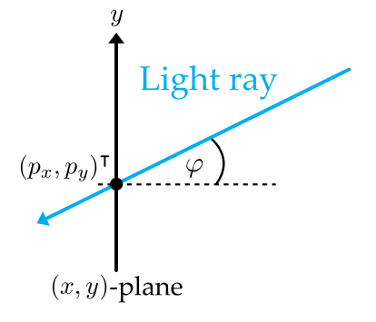Two-plane parameterization#
Parameterization of light rays via intersections \(\mathbf{p}=(p_x, p_y)^\intercal\) and \(\mathbf{q}=(q_u, q_v)^\intercal\) of ray with two parallel planes of known distance: \(L(x,y,u,v)\).
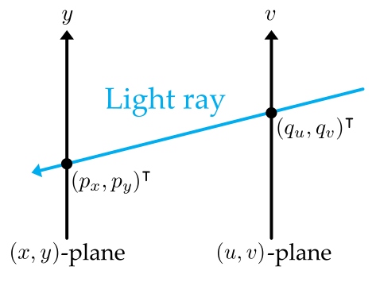Motivation - use of light fields?#
Consider intensities captured by traditional camera:
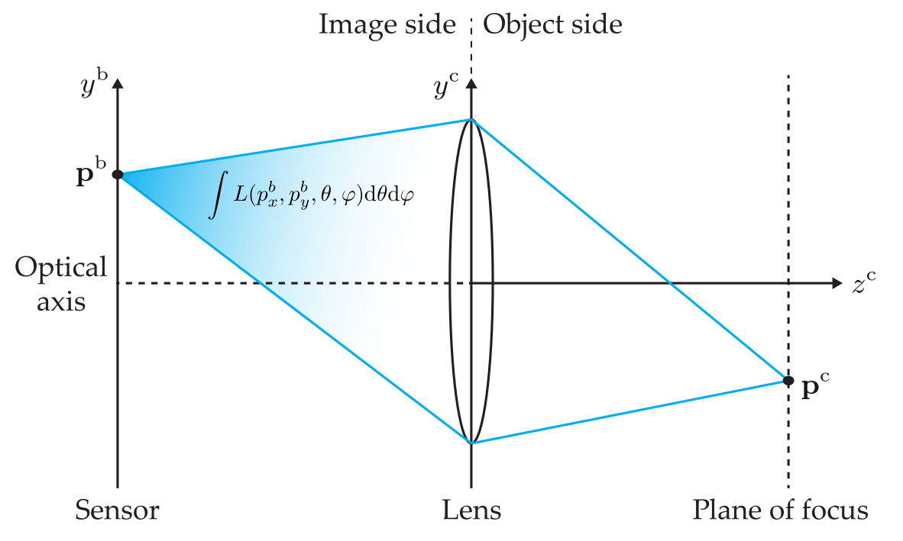Each pixel integrates over all incident rays regardless their direction of incidence - any directional information is lost.
When could directional information help?#
Consider the case of defocused imaging:
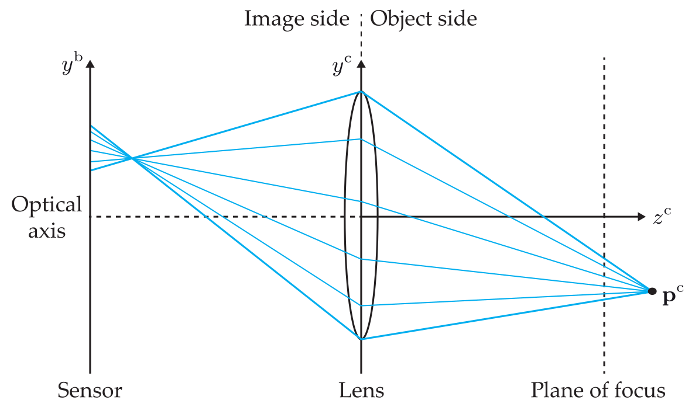Idea: reconstruction of in-focus image by virtually shifting sensor into plane of converging rays.
Therefore one must collect the “right” rays from the pixel that collected the diverging ray bundle.
Requires pixel that can resolve the direction of incidence.
➡ Digital refocusing after image acquisition.
Unprocessed |
Post capture refocused |
|---|---|
|
|


Light field acquisition for photography applications#
Open question: How to capture light fields?
Now: light field acquisition for photography applications.
Light field cameras (spatial multiplexing)
Camera gantries (moving cameras) / coded apertures (temporal multiplexing)
Camera arrays
Later: light field acquisition for visual inspection applications.
TODO: Light field acquisition for medical applications?
Light field camera#
Optical principle of a light field camera#
Idea: use microlenses to split incident ray bundles so that pixel sens different directions of incidence.
interact(lambda i: showFig('figures/3/lfCameraPrinciple_',i,'.svg',800,500), i=widgets.IntSlider(min=1,max=3, step=1, value=1))
<function __main__.<lambda>(i)>
Microlens array at image plane of main lens.
Sensor at distance \(b_\mathrm{ML} = f_\mathrm{ML}\) behind microlens array with focal length \(f_\mathrm{ML}\) of microlenses.
All pixel behind one microlens observe the same object point, but from different perspectives.
Since the sensor is located in the focal plane of the microlenses, this part of the optical system is focused at optical infinity. As the distance \(b_\mathrm{L}\) between the microlenses and the main lens is very large compared to \(f_\mathrm{ML}\), the microlenses yield a sharp image of the plane of the main lens on the image sensor. Consequently, every pixel under one microlens observes a section of this plane, i.e., a sub-aperture, and integrates all the light rays with the corresponding propagation directions.
➡ 4D light field is spatially multiplexed on the 2D sensor by trading in spatial resolution for angular resolution.
➡ Allows to obtain two-plane parameterization \(L(x^\mathrm{ML}, y^\mathrm{ML}, x^\mathrm{L}, y^\mathrm{L})\).
Spatial and angular resolution#
Resolution parameters of a light field camera:
Spatial resolution: number of microlenses in horizontal and vertical direction.
Angular resolution: number of pixel corresponding to one microlens in horizontal and vertical direction.
➡ Spatio-angular resolution trade-off, i.e., for a fixed sensor size increasing the spatial resolution (i.e., reducing the size of the microlenses) reduces the angular resolution and vice versa.
How to choose \(d_\mathrm{ML}, b_\mathrm{ML}, d_\mathrm{L}, b_\mathrm{L}\)?#
Goal: no crosstalk, i.e., rays incident to a microlens only reach the pixel corresponding to this microlens.
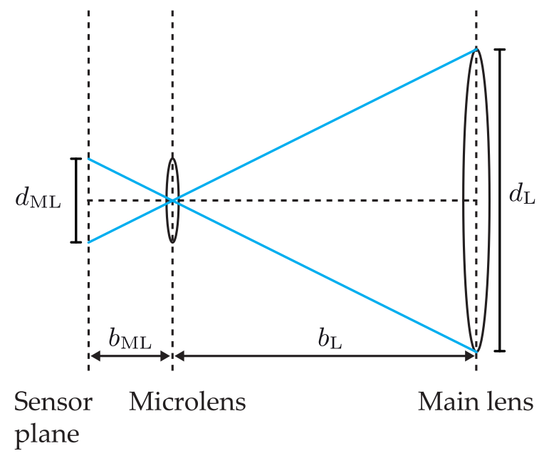In order to map the whole main lens to the pixels corresponding to one microlens, it has to be
\(\begin{align}
\frac{d_\mathrm{ML}}{b_\mathrm{ML}}=\frac{d_\mathrm{L}}{b_\mathrm{L}}\,,
\end{align}\)
according to the intercept theorem.
Digital representation of light field images#
Example light field from The (New) Stanford Light Field Archive (http://lightfield.stanford.edu/lfs.html):
interact(lambda i: showFig('figures/3/lfExample_',i,'.png',800,1100), i=widgets.IntSlider(min=1,max=8, step=1, value=1))
<function __main__.<lambda>(i)>
Digital representation of a spatially multiplexed light field \(L(\mathbf{m},\mathbf{j})\) with
two discrete spatial coordinates \(\mathbf{m}=(m,n)^\intercal\) representing the grid of microlenses and
two discrete angular coordinates \(\mathbf{j}=(j,k)^\intercal\) representing the pixel behind one microlens, encoding the angular information.
Sometimes, the set of pixel corresponding to one microlens is called a macro pixel.
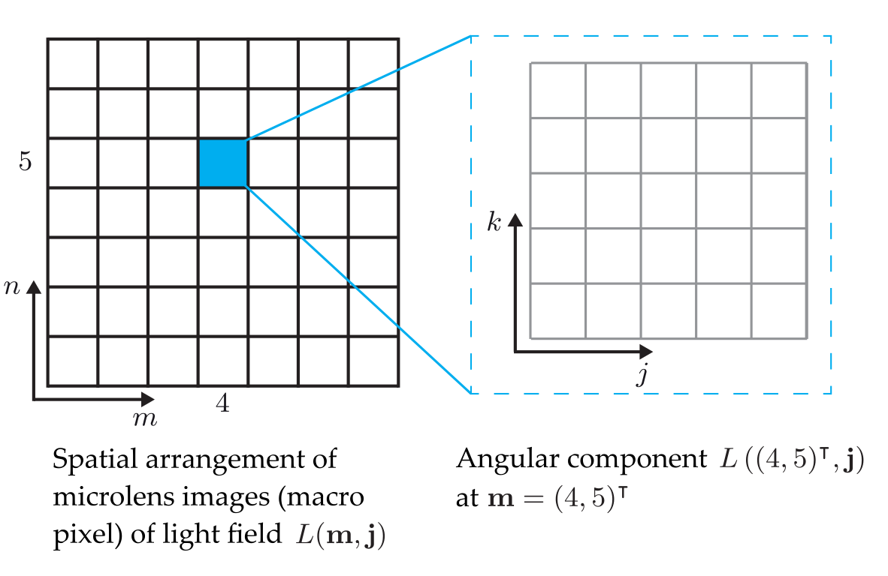When a light field image is provided as a conventional image \(g(\mathbf{x})\), as in the case of a light field camera, the \(L(\mathbf{m},\mathbf{j})\)-representation has to be extracted via:
\(\begin{align} L\left( (m,n)^\intercal, (j,k)^\intercal \right) = g\begin{pmatrix} (m-1)\cdot J + j \\ (n-1)\cdot K + k \end{pmatrix} \,, \quad\mathrm{with}\, j\in \left[1,\ldots,J\right],\,k\in\left[1,\ldots,K\right]\,. \end{align}\)
Sub aperture images#
Every pixel behind a microlens observes the scene from a different angle, i.e., through a different portion of the aperture (the main lens).
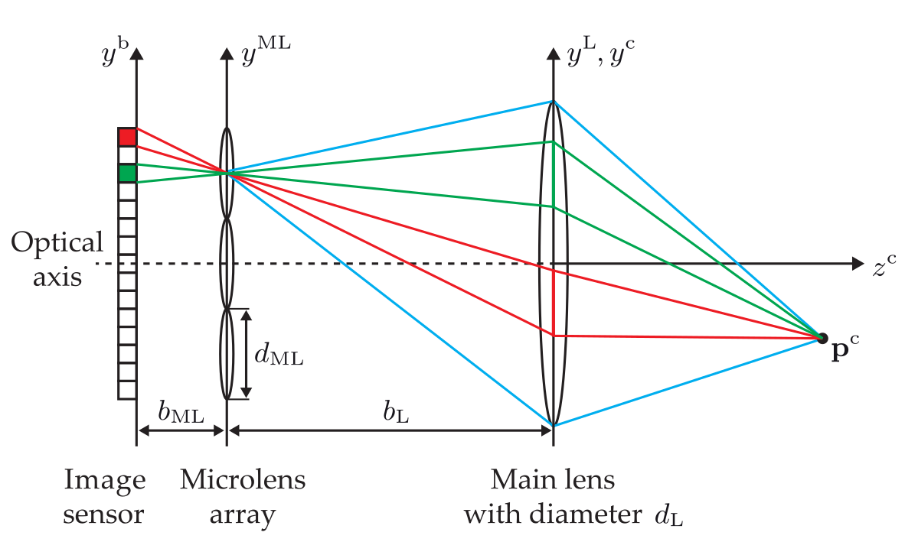By combining all the pixel with the same relative position \((j',k')^\intercal\) with respect to the corresponding microlens, so-called sub aperture images (SAI) \(L^{(j,k)}(\mathbf{m})\) can be constructed:
\(\begin{align} L^{(j,k)}(\mathbf{m}) := L\left( \mathbf{m}, (j,k)^\intercal \right) \end{align}\)
Note
The term SAI is also applicable for the continuous case, i.e.,
\(\begin{align}
L^{(u,v)}\left((x,y)^\intercal\right):=L\left( (x,y)^\intercal, (u,v)^\intercal \right)\,.
\end{align}\)
Example#
Slide show of SAIs \(L^{(j,9)}(\mathbf{x}),\, j\in\left[0,\ldots,16\right]\) from previous light field image:
ax = plt.figure()
interact(lambda i: showFig2('figures/3/lfSAIs/out_09_',i,'.png',800,1100), i=widgets.IntSlider(min=0,max=16, step=1, value=1))
<function __main__.<lambda>(i)>
Temporal multiplexing#
The static scene is captured with a single camera
from different perspectives, e.g., using a gantry, or
with different configurations of a coded aperture (more later).
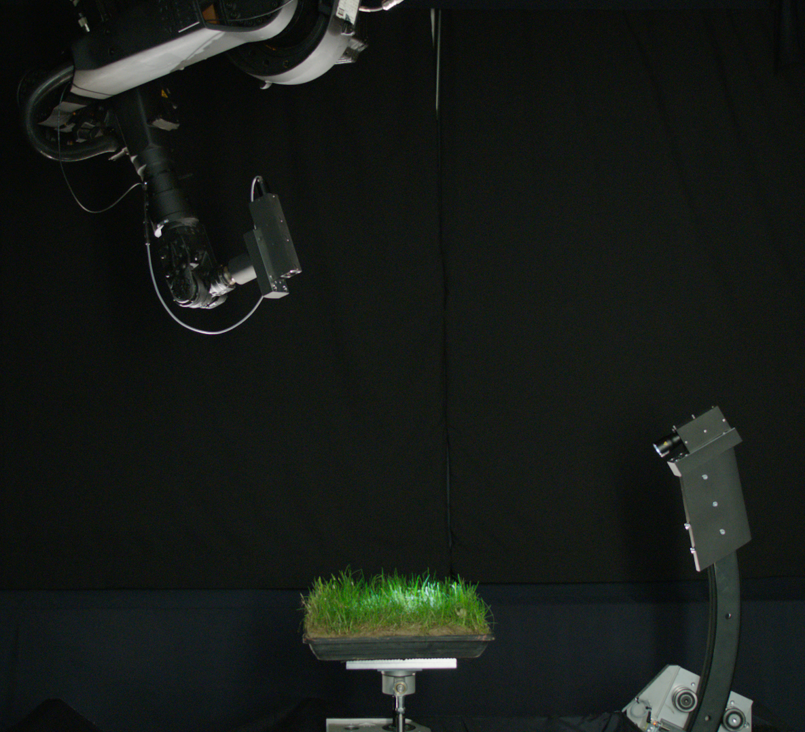
Gantry for observing a patch of grass illuminated from the right with a camera from above (by Fraunhofer-IOSB Ettlingen).
The gantry has to be precisely calibrated so that the single camera images can be combined into a common light field.
Camera arrays#
Arrays of cameras also allow to capture light fields.
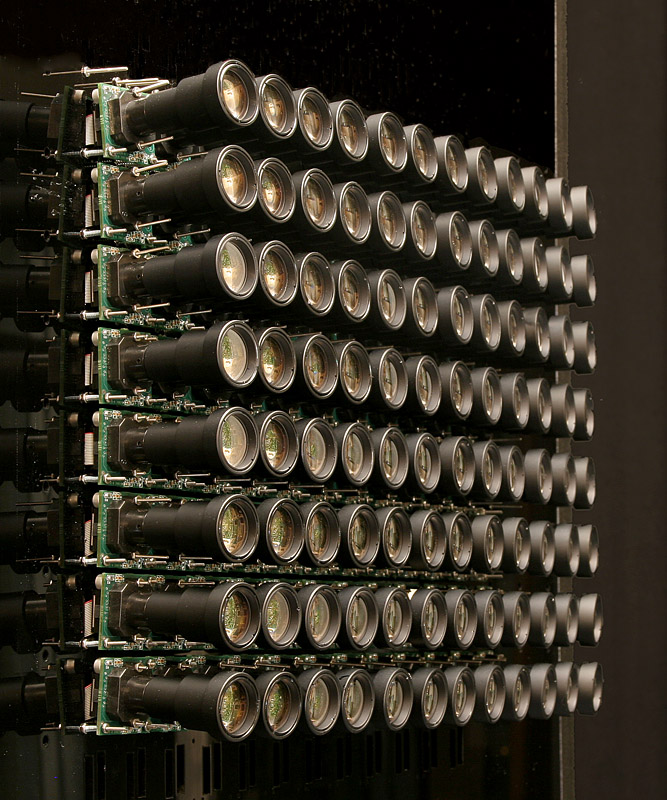
Stanford camera array (http://graphics.stanford.edu/projects/array/images/tiled-side-view-cessh.jpg).
{kind=link}
The cameras are arranged in a grid \((j,k)\in\Omega_\mathrm{a}\) with angular support \(\Omega_\mathrm{a}= \left[1,\ldots,J\right]\,\times\, \left[1,\ldots,K\right]\,\).
The camera at position \((j,k)\) captures the sub aperture image \(L^{(j,k)}(\mathbf{m})\).
Light field processing for photography applications#
Custom aperture imaging#
Idea: Synthesize image by combining some SAIs (-> small aperture, big aperture, custom aperture).
Digital refocusing#
Light fields in a conventional camera#
Consider the light field \(L_b\) in a conventional camera for the case of focused imaging with an image distance of \(b\). The \((x,y)\)-plane corresponds to the sensor plane and the \((u,v)\)-plane corresponds to the lens plane.
Light field in camera |
Ray diagram |
|---|---|
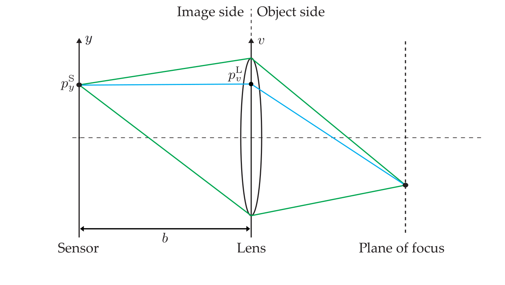 |
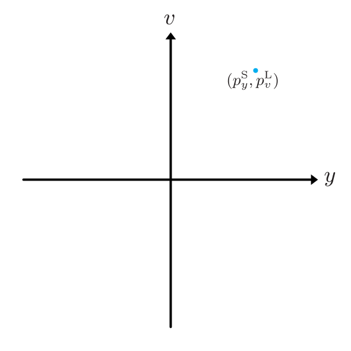 |
A single light ray intersecting the lens at \(\mathbf{p}^\mathrm{L}=(p^\mathrm{L}_u,p^\mathrm{L}_v)\) and hitting the sensor at \(\mathbf{p}^\mathrm{S}(p^\mathrm{S}_x,p^\mathrm{S}_y)\), corresponds to a single point in the light field at position \((p^\mathrm{S}_x,p^\mathrm{S}_y,p^\mathrm{L}_u,p^\mathrm{L}_v)\).
Light field in camera |
Ray diagram |
|---|---|
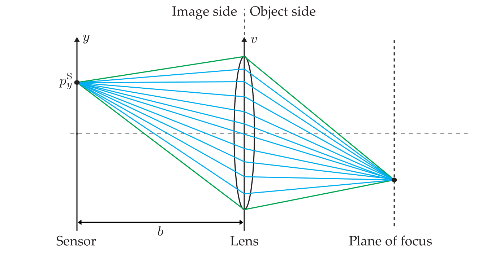 |
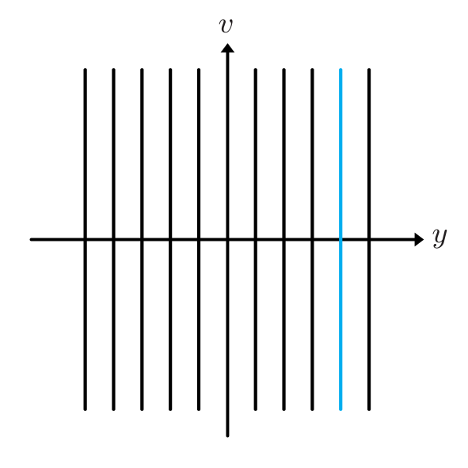 |
At point \(\mathbf{p}^\mathrm{S}\) the sensor integrates over light rays coming from all possible aperture positions, i.e., for all \(\mathbf{p}^\mathrm{L}\) lying on the lens surface. This corresponds to an integration
\(\begin{align}
g_b\left(\mathbf{p}^\mathrm{S}\right)=\int\int L_b(p^\mathrm{S}_x,p^\mathrm{S}_y,u,v)\, \mathrm{d}u\,\mathrm{d}v\,.
\end{align}\)
Light field in camera |
Ray diagram |
|---|---|
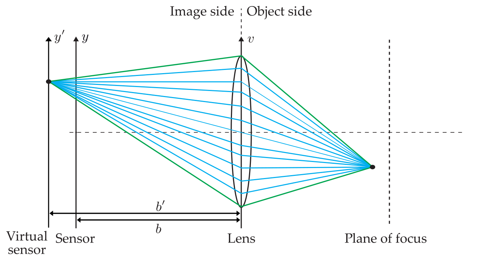 |
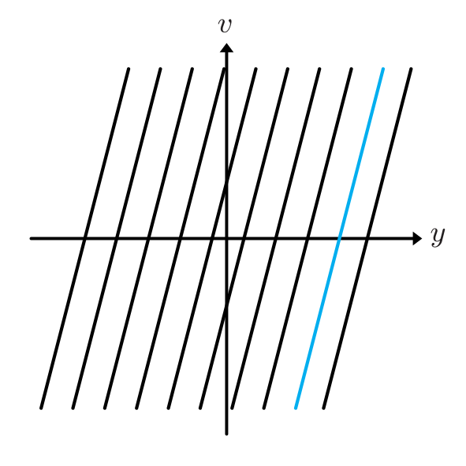 |
In the case of defocused imaging for an object point too close to the camera, the rays that would be collected at point \(\mathbf{p}^\mathrm{S'}(p^\mathrm{S'}_{x'}p^\mathrm{S'}_{y'})\) on an adequately placed virtual sensor in the \((x',y')\)-plane, correspond to points lying on a plane with positive slope in the originally captured light field \(L_b\).
Light field in camera |
Ray diagram |
|---|---|
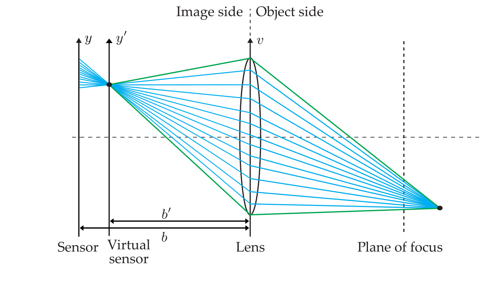 |
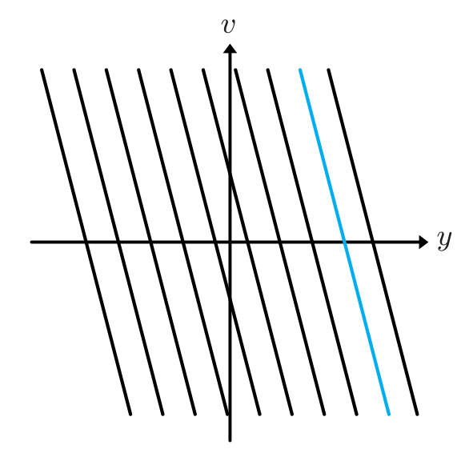 |
In contrast, an object point farther away from the camera, correspond to points lying on a plane with negative slope in the originally captured light field \(L_b\).
Image formation for virtual sensor planes#
Express the light field \(L_{b'}(x',y',u,v)\) corresponding to the virtual sensor plane having a distance of \(b'\) to the lens by means of the original light field \(L_b(x,y,u,v)\) having a distance of \(b\) to the lens.
According to the intercept theorem, it is:
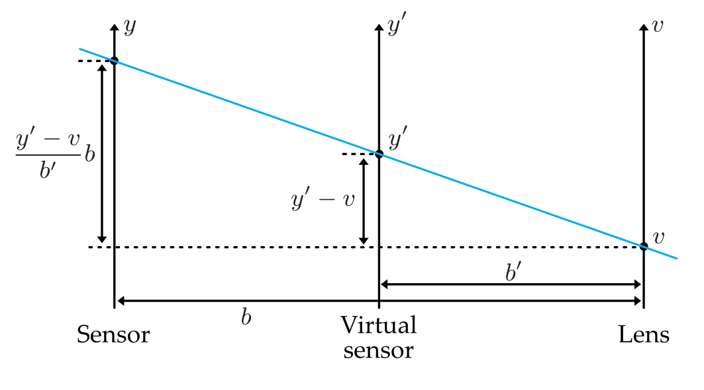
(This also holds for the other dimensions, i.e., \(x,x'\) and \(u\))
Defining \(\alpha:=\frac{b'}{b}\) as the relative depth leads to the expression of \(L_{b'}(x',y',u,v)\) by means of \(L_b(x,y,u,v)\):
$\begin{align} L_{b'}(x',y',u,v) &=L_b\left(\frac{x'-u}{\alpha} + u , \frac{y'-v}{\alpha} + v, \, u\,,\, v\, \right)\\ &=L_b\left(u\left(1-\frac{1}{\alpha} \right)+\frac{x'}{\alpha}, v\left( 1-\frac{1}{\alpha}\right) + \frac{y'}{\alpha},\, u\,,\, v\, \right)\,. \end{align}$
Hence, the image corresponding to a virtual sensor \(g_{b'}(x',y')\) with image distance \(b'=\alpha\cdot b\) is formed by:
$\begin{align} g_{b'}(x',y') = \int\int L_b\left(u\left(1-\frac{1}{\alpha} \right)+\frac{x'}{\alpha}, v\left( 1-\frac{1}{\alpha}\right) + \frac{y'}{\alpha},\, u\,,\, v\, \right) \, \mathrm{d}u\,\mathrm{d}v\,. \end{align}$
Images of virtual sensor planes can be calculated by numerically evaluating the corresponding integrals.
A much more comfortable way will be presented in the following section.
Refocused image synthesis via shift and add#
Consider again the previous equation
$\begin{align} g_{b'}(x',y') = \int\int L_b\left(u\left(1-\frac{1}{\alpha} \right)+\frac{x'}{\alpha}, v\left( 1-\frac{1}{\alpha}\right) + \frac{y'}{\alpha},\, u\,,\, v\, \right) \, \mathrm{d}u\,\mathrm{d}v\,. \end{align}$
Since the angular coordinates \((u,v)\) of \(L_b\) are left untouched, it can also be expressed via sub-aperture images \(L^{(u,v)}\left((x,y)^\intercal\right):=L\left( (x,y)^\intercal, (u,v)^\intercal \right)\):
$\begin{align} g_{b'}(x',y') = \int\int L^{(u,v)}_b\biggl ( \bigl( u\left(1-1\,/\,\alpha \right)+x'\,/\,\alpha,\, v\left( 1-1\,/\,\alpha\right) + y'\,/\,\alpha\bigr)^\intercal \biggr) \, \mathrm{d}u\,\mathrm{d}v\,. \end{align}$
Here, \(L^{(u,v)}_b\biggl ( \bigl( u\left(1-1\,/\,\alpha \right)+x'\,/\,\alpha,\, v\left( 1-1\,/\,\alpha\right) + y'\,/\,\alpha\bigr)^\intercal \biggr)\) is just the SAI \(L^{(u,v)}_b\) but
shifted by an offset of \(\bigl( u(1-1\,/\alpha), v(1-1\,/\alpha) \bigr)^\intercal\) and
stretched by a factor of \(1\, / \, \alpha\,.\)
Since the stretch factor \(1\,/\,\alpha\) is the same for all SAIs, it can be neglected.
Hence, for a recorded light field with typically discrete angular resolution, the integral breaks down to a summation over all properly shifted SAIs.
This is why the procedure is called shift and add.
Example#
Read light field from bedroom scene from the HCI light field benchmark dataset (see ‘A dataset and evaluation methodology for depth estimation on 4D light fields’ by Honauer et al.):
path = 'figures/3/bedroom/'
tmp = cv2.cvtColor(np.uint8(255*plt.imread(f"{path}input_Cam000.png")), cv2.COLOR_RGB2GRAY)
lf = np.zeros((tmp.shape[0], tmp.shape[1], 9, 9), dtype = 'uint8')
for j in range(0,9):
for k in range(0,9):
imgStr = str(j*9+k)
while len(imgStr) < 3:
imgStr = f"0{imgStr}"
curImg = cv2.cvtColor(np.uint8(255*plt.imread(f"{path}input_Cam{imgStr}.png")), cv2.COLOR_RGB2GRAY)
lf[:,:,j,k] = curImg
Show center SAI for \(\mathbf{j}=(4,4)^\intercal\):
imshow(lf[:,:,4,4], cmap='gray')
Synthesize full aperture image, i.e., \(g(\mathbf{m})=\sum\limits_{\mathbf{j}\in\Omega_\mathrm{a}} L(\mathbf{m},\mathbf{j})\,\):
imshow(np.sum(np.sum(lf,axis=2),axis=2), cmap='gray')
Define a refocus function by means of shift and add:
def refocus(alpha):
refocused = np.zeros_like(lf[:,:,0,0])
refocused = np.float32(refocused)
for v in range(0,lf.shape[2]):
for u in range(0,lf.shape[3]):
curShift = np.array([[1, 0, u*(1-1/alpha)],
[0, 1, v*(1-1/alpha)]], dtype='float32')
curSAI = np.float32(lf[:,:,v,u])
curSAIShifted = cv2.warpAffine(curSAI, curShift, (curSAI.shape[1], curSAI.shape[0]))
refocused = refocused + curSAIShifted
return refocused
Visualize the refocusing results for different \(\alpha\):
plt.figure()
interact(lambda alpha: imshow2(refocus(alpha),cmap='gray'), alpha=widgets.FloatSlider(min=0.4,max=3.0, step=0.2, value=1.0))
<function __main__.<lambda>(alpha)>
Extended depth of field#
Apparently, the light field allows to synthesize images of the observed scene focused at different depths.
So how to obtain an image with increased depth of field?
Easy: Extract a single sub-aperture image.
Drawback: Corresponds to small aperture (equivalent to stopping down), i.e., less light, leading to increased noise.
Better:
Synthesize stack of images refocused at different depths.
Fuse images to a single image with increased depth of field (well studied problem, see literature).
TBD.
Visualizing refractive phenomena in transparent media#
TODO: Evtl. diesen Abschnitt auch unter Sichtprüfung
Light gets refracted, i.e., its direction of propagation changes, when it passes an interface between two media with different indices of refraction.
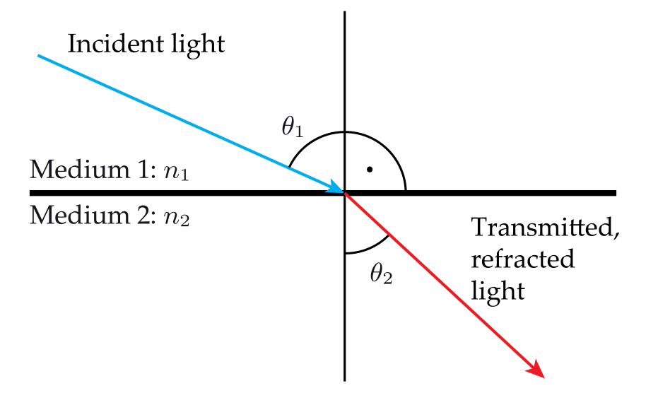
According to Snell’s law of refraction it is
\begin{align} n_1 \sin \theta_1 = n_2 \sin \theta_2 \end{align}
With the indices of refraction \(n_1, n_2\) of the first and the second medium, the angle of incidence \(\theta_1\) and the angle \(\theta_2\) of the transmitted refracted light beam.
Humans are not able to percieve refractive effects per se but by their optical effect.
Schlieren imaging#
Schlieren imaging has been invented by August Toepler in 1864. It maps gradients of the index of refraction to intensity changes of an image.
The name comes from the visual similarity between the observed intensity structures and the German term for smears (e.g. oily smears on a window).
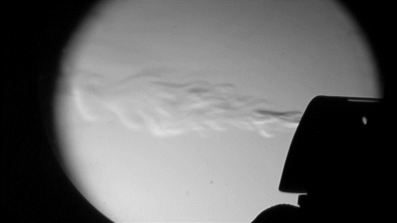
(Turbulent flow of gas exiting the lighter on the right)
Optical setup of Schlieren imaging#
interact(lambda i: showFig('figures/3/SchlierenPrinciple_',i,'.svg',800,500), i=widgets.IntSlider(min=0,max=4, step=1, value=0))
<function __main__.<lambda>(i)>
Collimated illumination (only parallel rays).
Imaging lens and sensor focused on refractive phenomenon.
Schlieren stop (‘knife edge’) in focal plane of imaging lens.
Depending on configuration of Schlieren stop, deflection events of different angles are visualized.
Recall: Spatial filtering in the focal plane of a lens corresponds to angular filtering of the direction of propagation of captured light rays (cf. Chapter 2).

Quantitative measurements of the deflection angle \(\alpha\) are only possible if
with \(\varepsilon\) denoting the diameter of the image of the light source.
Task: Assume a pinhole with a circular opening of … being used as the schlieren stop - calculate which deflection angles are accepted by the system.
Task: Implement a Schlieren setup in the Mitsuba rendering framework.
Color-coded schlieren#
Instead of using an opaque schlieren stop, a color-wheel can also be employed for encoding the directional information.
Task: Implement a color-coded Schlieren setup in the Mitsuba rendering framework.
Background oriented schlieren#
TBD.
Refracting effects can also be visualized by directionally encoding the illumination (see section light field illumination).
Light field illumination#
Printed light field probes#
Color gradients (in HSI space) printed as hexagonal micro images positioned under an array of hexagonal microlenses at a distance of the lenses’ focal length.
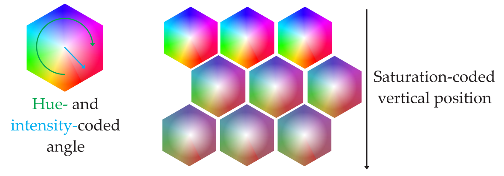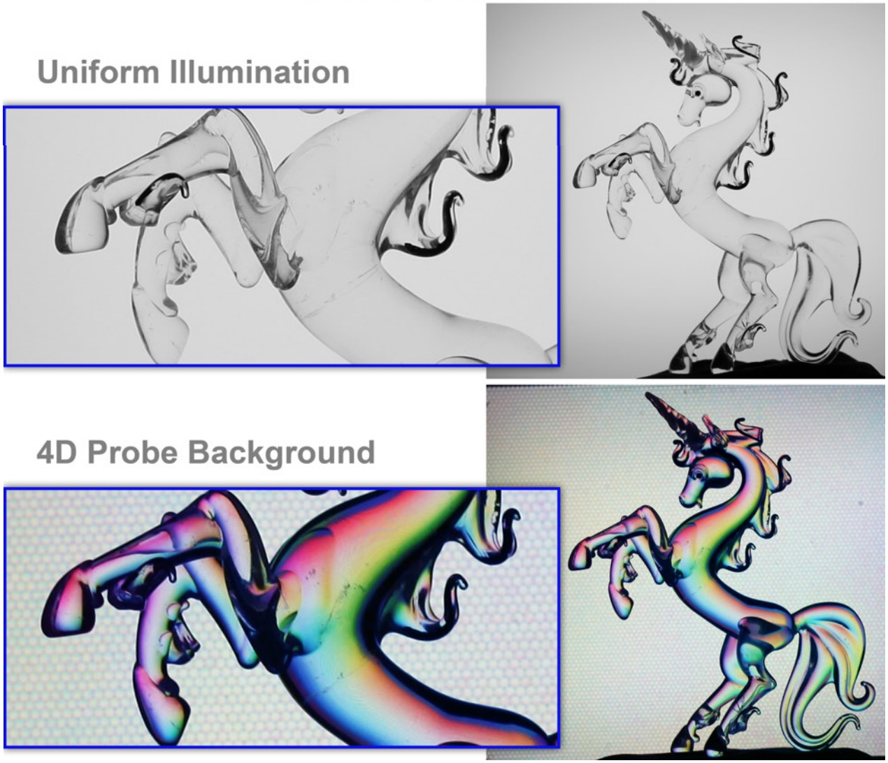
(Kindly provided by Prof. Gordon Wetzstein, Stanford University)
TBD: Image showing deflected ray of sight hitting LF probe.
Light field generation with light field displays#
Instead of using a static printed pattern, employ a display with programmable pixels.
interact(lambda i: showFig('figures/3/lfg_concept_',i,'.svg',800,500), i=widgets.IntSlider(min=1,max=4, step=1, value=0))
<function __main__.<lambda>(i)>
Angle \(\alpha\) of emitted collimated light bundle depends on focal length \(f_\mathrm{ML}\) of microlenses and on the distance \(\delta_\alpha\) of the activated pixel to the optical axis of the corresponding microlens:
Parameters of a light field display#
Important parameters of a light field display:
Spatial resolution, i.e., numbers \(M_\mathrm{ML}, N_\mathrm{ML}\) of microlenses in horizontal and vertical direction.
Pitches \(s_\mathrm{h}, s_\mathrm{v}\) of microlenses in horizontal and vertical direction.
Total ranges of possible angles \(\theta_\mathrm{t}, \varphi_\mathrm{t}\) of collimated light beams in horizontal and vertical direction.
Angular resolution, i.e., numbers \(A_\mathrm{h}, A_\mathrm{v}\) of independent emission angles in horizontal and vertical direction.
Pitches \(\theta_\Delta, \varphi_\Delta\) of emission angles in horizontal and vertical direction.
TODO: Extend graphic with distance between pixels etc.
Calculation of \(\theta_\mathrm{t}, \varphi_\mathrm{t}\): $\(\begin{align} \tan\left( \frac{\varphi_\mathrm{t}}{2} \right) &= \frac{d_\mathrm{ML}}{2} \cdot \frac{1}{f_\mathrm{ML}} \Leftrightarrow \\ \varphi_\mathrm{t} &= 2\cdot \tan^{-1}\left( \frac{d_\mathrm{ML}}{2} \cdot \frac{1}{f_\mathrm{ML}} \right) \,. \end{align} \)$
Calculation of \(A_\mathrm{h}, A_\mathrm{v}\): $\(\begin{align} A_\mathrm{h}=\frac{d_\mathrm{ML}}{e_\mathrm{h}},\quad A_\mathrm{v}=\frac{d_\mathrm{ML}}{e_\mathrm{v}}\, \end{align} \)\(with \)e_\mathrm{h}, e_\mathrm{v}$ denoting the horizontal and vertical sizes of the pixel elements of the display.
The angular pitches \(\theta_\Delta, \varphi_\Delta\) can be estimated via $\(\begin{align} \theta_\Delta \approx \frac{\theta_\mathrm{t}}{A_\mathrm{h}},\quad \varphi_\Delta \approx \frac{\varphi_\mathrm{t}}{A_\mathrm{v}} \,. \end{align} \)$
The two recent formulas are only approximations due to the non-linear nature of the tangent function. Indeed, for the dimensions involved in the case of a practical light field display, the errors introduced by these approximations can be neglected.
Calibration of a light field display#
Goal: emit user-defined \(L(x,y,\theta,\varphi)\).
Question: which pixels of the employed display have to be turned on to emit a light field that matches \(L\) as well as possible?
\(\Rightarrow\,\) Calibration needed to obtain a function $\(\begin{align} f_\mathrm{LF}:(x,y,\theta,\varphi)\mapsto \mathbf{u}\,, \end{align} \)$
mapping a requested ray \((x,y,\theta,\varphi)\) with \(L(x,y,\theta,\varphi)>0\) to a display pixel \(\mathbf{u}=(u,v)^\intercal,\, u\in\left[ 1,\ldots, U\right],\,v\in\left[1,\ldots,V \right]\) which emits a collimated light bundle providing the best approximation of this ray.
Calibration: Determine central pixel \(\tilde{\mathbf{u}}_{(x,y)}\) for every spatial position \((x,y)\) of the light field display, i.e., the coordinate of the display pixel corresponding to a collimated light bundle with respect to the microlens covering position \((x,y)\).
Maybe: Add illustration of central pixel.
To emit a requested ray bundle \((x,y,\theta,\varphi)\),
determine the central pixel \(\tilde{\mathbf{u}}_{(x,y)}\) corresponding to the microlens covering \((x,y)\),
translate emission angle \((\theta,\varphi)\) into pixel offset \(\Delta\mathbf{u}_{(\theta,\varphi)}\) w.r.t. \(\tilde{\mathbf{u}}_{(x,y)}\) by calculating the corresponding spatial displacement on the plane of the display via \(\tan(\alpha) = \frac{\delta_\alpha}{f_{\mathrm{ML}}}\).
By this means, \(f_\mathrm{LF}\) can be evaluated:$\(\begin{align} f_\mathrm{LF}(x,y,\theta,\varphi)=\tilde{\mathbf{u}}_{(x,y)} + \Delta \mathbf{u}_{(\theta,\varphi)}\,. \end{align}\)$
Determination of central pixels#
Calibration setup consisting of
the light field display,
industrial monochrome camera with a telecentric lens
which is focused at the light field display and
whose optical axis is arranged as parallel as possible to the optical axes of the light field display’s microlenses,
calibration algorithms.
\(\Rightarrow\) Because of the telecentric lens, the camera captures only those light bundles emitted by the light field display that
propagate parallel to the optical axis and
which therefore have to be emitted by central pixels.
Display two illumination series, encoding the horizontal \(u\)-coordinate, respectively, the vertical \(v\)-coordinate.
Algorithm to determine central pixels#
\(\mathbf{Function}\, \mathrm{acquireCentralPixels}(\mathtt{camera}, \mathtt{LFGenerator})\)
\(\quad g_0(\mathbf{m}) \leftarrow \mathtt{camera}.\)acquireImage()
\(\quad \mathcal{L} \leftarrow \emptyset\)
\(\quad g_\mathrm{hor}(\mathbf{m}) \leftarrow \mathtt{emptyImage}(M,N)\)
\(\quad g_\mathrm{ver}(\mathbf{m}) \leftarrow \mathtt{emptyImage}(M,N)\)
\(\quad \mathbf{for}\, i \in \left[1,\ldots,\lceil \mathrm{log}_2(U) \rceil \right]:\)
\(\qquad \mathcal{U} \leftarrow \lbrace u\in \left[1,\ldots,U\right] : \mathrm{bin}(u)_i = 1 \rbrace\)
\(\qquad \mathcal{V} \leftarrow \left[ 1,\ldots,V \right]\)
\(\qquad \mathtt{LFGenerator}\).turnOnPixels(\(\mathcal{U}\times \mathcal{V}\))
\(\qquad g(\mathbf{m}) \leftarrow \mathtt{camera}.\)acquireImage() \(-\ g_0(\mathbf{m})\)
\(\qquad \mathrm{bin}(g_\mathrm{hor}(\mathbf{m}))_i = \begin{cases} 1 &\mathrm{if}\ g(\mathbf{m}) > t, \\ 0 & \mathrm{otherwise}\end{cases}\)
\(\quad \mathbf{for} \, i \in \left[1,\ldots,\lceil \mathrm{log}_2(V) \rceil \right]\)
\(\qquad \mathcal{U} \leftarrow \left[ 1,\ldots,U \right]\)
\(\qquad \mathcal{V} \leftarrow \lbrace v\in \left[1,\ldots,V\right] : \mathrm{bin}(v)_i = 1 \rbrace\)
\(\qquad \mathtt{LFGenerator}\).turnOnPixels(\(\mathcal{U}\times \mathcal{V}\))
\(\qquad g(\mathbf{m}) \leftarrow \mathtt{camera}.\)acquireImage() \(-\ g_0(\mathbf{m})\)
\(\qquad \mathrm{bin}(g_\mathrm{ver}(\mathbf{m}))_i = \begin{cases} 1 &\mathrm{if}\ g(\mathbf{m}) > t, \\ 0 & \mathrm{otherwise}\end{cases}\)
\(\quad \mathcal{L} = \lbrace \left(g_\mathrm{hor}(\mathbf{m}), g_\mathrm{ver}(\mathbf{m})\right)^\intercal, \mathbf{m}\in \left[1,\ldots,M\right] \times \left[1,\ldots,N\right] \rbrace\)
\(\quad \textbf{return}\, \mathcal{L}\)
TODO: Maybe add Christian’s more elaborated methods as well.
Light field display prototypes#
Prototype 1#
Based on Sony Xperia Z5 Premium smartphone.
Spatial resolution of \(2160 \times 3840\) pixels.
Array of \(100 \times 100\) microlenses with \(f_\mathrm{ML}=3000\,µ\mathrm{m}\) and \(d_\mathrm{ML}=645\,µ\mathrm{m}\) by Fraunhofer-IOF.
Spatial resolution of \(100 \times 100\) with pitches \(s_\mathrm{h}=s_\mathrm{v}=650\,\mathrm{µm}\),
total ranges of possible angles \(\theta_\mathrm{t}=\varphi_\mathrm{t}\approx 12.27^\circ\),
angular resolution of \(A_\mathrm{h}=A_\mathrm{v}=10\) with pitches \(\theta_\Delta=\varphi_\Delta\approx 1.23^\circ\), since approximately \(10\times 10\) display pixels fit under one microlens.

Experiments#
Camera images of light field display for different requested light fields and observation directions.

Question: How can one explain the bottom right image?
Telecentric light field illumination#
A special case of light field display: only one lens (no array) and many display pixels.

\(\Rightarrow\) no spatial resolution, maximum angular resolution.
For illumination purposes, large fresnel lenses can be employed, resulting in a big illuminated volume.
Light field acquisition for industrial applications#
For industrial applications, the possibilities of refocusing or extended depths of field shown before might also be of interest, however, even more information about the observed scene can be acquired, e.g., that can be exploited for visual inspection tasks.
Light deflection maps#
Light fields employed for the visual inspection of transparent objects are called light deflection maps. They are acquired via illuminating the test object from one side with collimated light and acquiring the light field exiting the test object on the other side.
interact(lambda i: showFig('figures/3/deflectionMapAcquisition_',i,'.svg',800,500), i=widgets.IntSlider(min=0,max=4, step=1, value=0))
<function __main__.<lambda>(i)>
Refraction at defect-free positions of the test object \(\Rightarrow\) concentrated, shifted peak in the corresponding deflection map.
Scattering material defect \(\Rightarrow\) light is scattered into multiple directions \(\Rightarrow\) deflection map with broad intensity distribution without distinct peak.
Example deflection maps for a cylindrical lens:
interact(lambda i: showFig('figures/3/exampleDeflMap_',i,'.svg',800,500), i=widgets.IntSlider(min=1,max=3, step=1, value=0))
<function __main__.<lambda>(i)>
Similar to a digital light field \(L\), a deflection map is defined as the four-dimensional structure $\(\begin{align} a(\mathbf{m},\mathbf{j}),\,\mathbf{m}=(m,n)^\intercal,\,\mathbf{j}=(j,k)^\intercal, \end{align} \)$
composed of two discrete spatial coordinates \((m,n)^\intercal\) and two discrete angular coordinates \((j,k)^\intercal\) with a spatial domain \(\Omega_\mathrm{s}\) and an angular domain \(\Omega_\mathrm{a}\).
Light field camera for industrial applications#
Problems with conventional light field cameras#
Non-uniform correspondence between captured deflection direction and relative pixel positions \((j,k)^\intercal\) under a microlens.
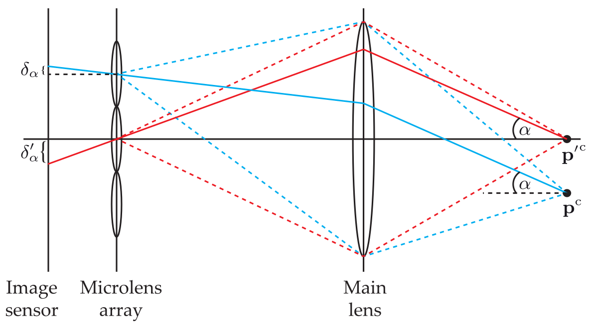Two collimated light rays are deflected upwards by \(\alpha\) at different points \(\mathbf{p}^\mathrm{c}, \mathbf{p}'^\mathrm{c}\). Although they are deflected by the same angle, they hit the sensor with different displacements \(\delta_\alpha \neq \delta'_\alpha\) with respect to the projected center of the corresponding microlenses.
\(\Rightarrow\) This problem can be mitigated by employing a \(4f\)-light field camera.
\(4f\)-light field camera#
Extend the optical setup by adding a second lens.
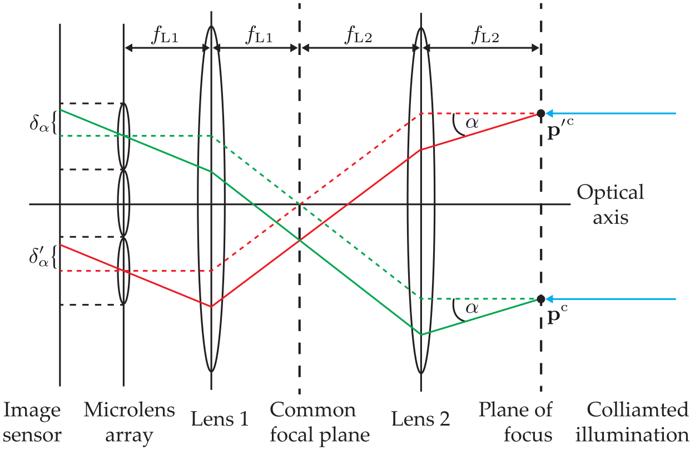Both lenses share a common focal plane and the plane of focus has a distance of \(2\cdot f_\mathrm{L1} + 2\cdot f_\mathrm{L2}\) from the microlens array which is why the setup is called a \(4f\)-light field camera.
In this setup, all collimated rays deflected by the same angle \(\alpha\) are mapped to the same relative sensor position regardless of lateral position of the deflection event in the measurement field.
Schlieren deflectometer#
Illuminate the test object with several collimated light bundles tilted by different angles with respect to the optical axis in a time-sequential manner. Observe the light rays defleclected by the object with a telecentric camera.

The illumination is realized by placing a two-dimensional programmable light source in the focal plane of a collimating lens.
Turning on a pixel of the programmalbe light source with distance \(\delta_\alpha\) to the optical axis leads to a collimated light bundle tilted by \(\alpha = \mathrm{tan}^{-1} \left( \frac{\delta_\alpha}{f_\mathrm{L}} \right)\) with respect to the optical axis.
Rays getting deflected in the measurement field so that they propagate parallel to the optical axis will pass the telecentric stop of the telecentric camera and contribute to the acquired image.
Capturing an image for a single active pixel of the light source corresponds to capturing a two-dimensional \((j,k)\)-slice of the deflection map \(a(m,n,j,k)\) with \((j,k)\) corresponding to the position of the active pixel (i.e., to the tilt angle of the collimated light beam).
Example deflection maps of a double-convex lens acquired with a schlieren deflectometer:
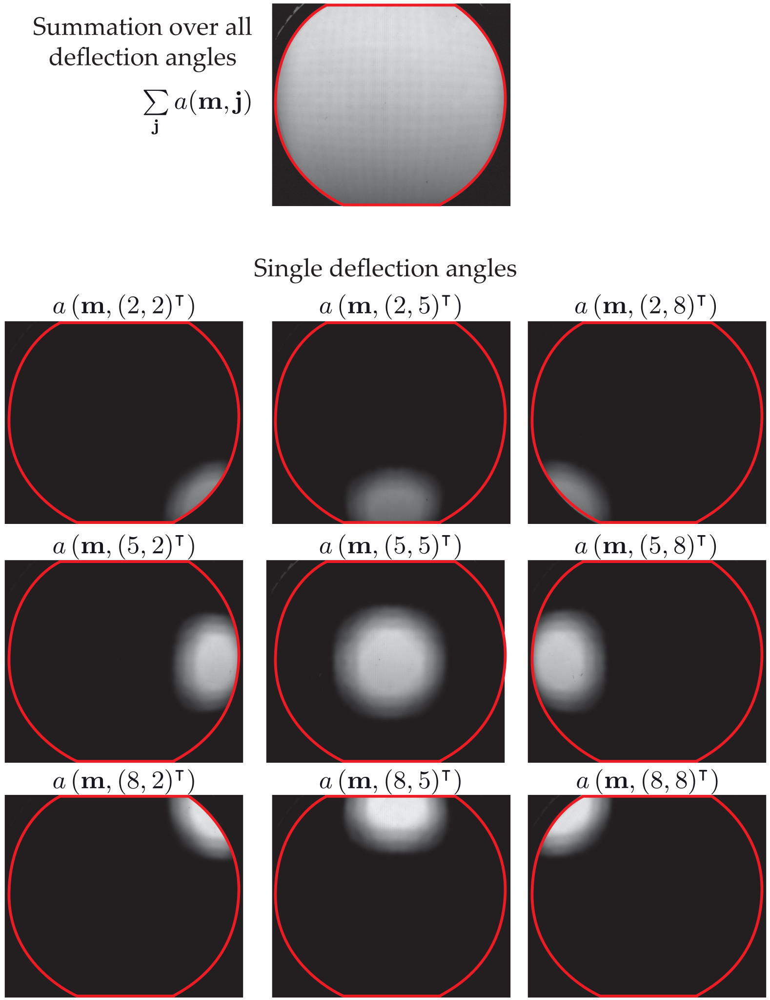Laser deflection scanner#
interact(lambda i: showFig('figures/3/LightfieldLaserScannerWithObject_',i,'.svg',800,500), i=widgets.IntSlider(min=1,max=3, step=1, value=0))
<function __main__.<lambda>(i)>
The laser deflection scanner consists of two components:
Emitter: Illuminates the measurement field with parallel laser beams in a time-sequential manner.
Receiver: Two-dimensional detector array positioned in focal plane of lens or parabolic mirror, transforming angular information into spatial information.
Laser beams deflected by an angle \(\alpha\) in the measurement field hit the detector at a distance of \(\delta_\alpha=f_\mathrm{L}\cdot \tan(\alpha)\) from the optical axis.
In every acquisition step, a single point on the object is illuminated by the laser beam and the deflections of the light rays transmitted through the object are measured.
Example deflection maps of a washing machine door glass acquired with a laser deflection scanner:

Light field processing for industrial applications#
Deflection map processing for transparent object inspection#
Recall: Deflection maps of spatially adjacent measurement points
are only slightly shifted for defect-free object positions,
show strong discontinuities for material defects.
\(\Rightarrow\) Approch: Calculate gradient of deflection maps with respect to the spatial coordinates.
Classical gradient formulation for gray value images \(g(\mathbf{x}), \mathbf{x}=(x,y)^\intercal\): $\( \mathrm{grad}\, g(\mathbf{x}) = \begin{pmatrix} \frac{\partial g(\mathbf{x})}{\partial y} \\ \frac{\partial g(\mathbf{x})}{\partial x} \end{pmatrix}\,. \)$
The gradient can be approximated by means of the so-called symmetric difference quotient: $\( \mathrm{grad}\, g(\mathbf{x}) \approx \begin{pmatrix} \frac{g(x+1, y) - g(x-1,y)}{2} \\ \frac{g(x,y+1) - g(x,y-1)}{2} \end{pmatrix}\,. \)$
Problem: This can not be directly applied for deflection maps since they are no scalar gray values but two-dimensional structures.
\(\Rightarrow\) Generalize the gradient approximation: $\( \mathrm{grad}\, f(\mathbf{x}) \approx \frac{1}{2} \begin{pmatrix} d \lbrace f(x+1, y), f(x-1,y)\rbrace \\ d \lbrace f(x, y+1), f(x,y-1)\rbrace \end{pmatrix}\,, \)\( with \)d\lbrace \cdot, \cdot \rbrace\( representing a suitable distance function and \)f(\mathbf{x})$ an arbitrary function.
For the application to a deflection map \(a(\mathbf{m}, \mathbf{j})\), this turns to $\( \mathrm{grad}_\mathbf{m}\, a(\mathbf{m},\cdot) \approx \begin{pmatrix} d \lbrace a( ( m+1,n)^\intercal, \cdot ), a((m-1,n)^\intercal,\cdot) \rbrace \\ d \lbrace a( ( m,n+1)^\intercal, \cdot ), a((m,n-1)^\intercal,\cdot) \rbrace \end{pmatrix}\,. \)$
Here, the distance function \(d\lbrace \cdot, \cdot \rbrace\) hast to process two two-dimensional intensity distributions, i.e., $\( d \lbrace a(\mathbf{m}_1,\cdot), a(\mathbf{m}_2,\cdot)\rbrace : \left( \Omega_\mathrm{a} \rightarrow \mathcal{Q} \right)^2 \rightarrow \mathbb{R}\,, \)\( with \)\Omega_\mathrm{a}\( denoting the angular domain and \)\mathcal{Q}$ the quantized intensity values.
The angular components can be interpreted as distributions of deflection angles.
\(\Rightarrow\) Distance functions for two-dimensional histograms represent promising choices for \(d\lbrace \cdot, \cdot \rbrace\).
After calculation of \(d\), further processing can be applied to \(\Vert \mathrm{grad}_\mathbf{m} a(\mathbf{m},\cdot)\Vert\), which represents a scalar value (i.e., resembling a gray value image).
Requirements for suitable distance functions \(d\lbrace \cdot, \cdot \rbrace\)#
Sensitivity to strong shifts of peaks
Sensitivity to spreadings of peaks
Sensitivity to intensity differences
Robustness against small variations
Low computational complexity
Promising choices: Earth Mover’s Distance and Generalized Cramér-von Mises Distance.
EMD ?#
Generalized Cramér-von Mises Distance#
It is often necessary to calculate a distance measure between two random vectors, respectively, between their corresponding probability density functions to assess their similarity.
Cumulative distributions are only well-defined for one-dimensional random vectors - the angular components of deflection maps are two-dimensional.
Use so-called localized cumulative distributions (LCDs) to formulate the so-called Generalized Cramér-von Mises Distance (CMD) as introduced by Hanebeck et al.
Localized cumulative distributions#
Let \(\mathbf{\tilde{x}} \in \mathbb{R}^N, N\in \mathbb{N}\) be a random vector,
let \(f:\mathbb{R}^N \rightarrow \mathbb{R}_+\) denote the corresponding probability density function.
The respective LCD \(F(\mathbf{x},\mathbf{b})\) is defined as:
$\(\begin{align}
F(\mathbf{x},\mathbf{b}) := P(\vert \mathbf{\tilde{x}}-\mathbf{x}\vert \leq \mathbf{b}), \\
F(\cdot,\cdot):\Omega \rightarrow \left[ 0,1 \right] \,, \\
\Omega \subset \mathbb{R}^N \times \mathbb{R}^N_+ , \ \mathbf{b} \in \mathbb{R}^N_+ \,,
\end{align}\)\(
with \)\mathbf{x} \leq \mathbf{y},, \mathbf{x},\mathbf{y} \in \mathbb{R}^N_+\( representing a component-wise relation that holds only if \)\forall j\in \left[ 1,\ldots, N \right]:x_j \leq y_j, $.
The LCD \(F(\mathbf{x},\mathbf{b})\) can be calculated via: $\(\begin{align} F(\mathbf{x},\mathbf{b}) = \begin{cases} \int\limits^{\mathbf{x}+\mathbf{b}}_{\mathbf{x}-\mathbf{b}} f(\mathbf{t})\mathrm{d} \mathbf{t} &,\ \mathrm{if\ } \mathbf{\tilde{x}} \mathrm{\ continuous,} \\ \sum\limits^{\min \lbrace \mathbf{x}_\mathrm{max},\, \mathbf{x} + \mathbf{b} \rbrace}_{\mathbf{t}=\max \lbrace \mathbf{0},\, \mathbf{x} - \mathbf{b} \rbrace} f(\mathbf{t}) &,\ \mathrm{if\ } \mathbf{\tilde{x}} \mathrm{\ discrete,} \end{cases} \end{align} \)$
with \(\mathbf{x}_\mathrm{max}\) denoting the upper limit of the domain of \(\mathbf{\tilde{x}}\), \(\max \lbrace \mathbf{x} \rbrace\), \(\min \lbrace \mathbf{x} \rbrace\) denoting element-wise maximum and minimum operators and \(\mathbf{0}=(0,\ldots,0)^\intercal\) denoting the zero vector.
(Note: since deflection maps represent discrete variables, only the discrete case will be considered from now on)
Generalized Cramér-von Mises Distance#
Let \(\stochvec{x}, \stochvec{y} \in \mathbb{R}^N, N\in \mathbb{N}\) be two random vectors, let \(f(\mathbf{x}),h(\mathbf{x})\) be their corresponding probability density functions and let \(F(\mathbf{x},\mathbf{b}), H(\mathbf{x},\mathbf{b})\) denote their LCDs (as defined previously).
For the continuous case, the CMD of \(f(\mathbf{x})\) and \(h(\mathbf{x})\) is given by: $\(\begin{equation} \text{CMD}(f,h) := \int\limits_{\mathbb{R}^N}\int\limits_{\mathbb{R}^N_+} \left( F(\mathbf{x},\mathbf{b}) - H(\mathbf{x},\mathbf{b}) \right)^2 \mathrm{d} \mathbf{b} \mathrm{d} \mathbf{x} \,. \end{equation}\)$
For discrete random vectors, the integrals turn into summations yielding: $\(\begin{equation} \text{CMD}(f,h) = \sum\limits_{\mathbf{x}\in \Omega} \limits \sum\limits^{b_\mathrm{max}}_{b=0} \left( F(\mathbf{x},(b,\ldots,b)\transp) - H(\mathbf{x},(b,\ldots,b)\transp) \right)^2 \,, \end{equation}\)\( with \)\Omega\( denoting the domain of the probability density functions and \)b_\mathrm{max}\( representing the absolute maximum component value of \)\Omega$, i.e., the maximum kernel size necessary to capture the whole probability density functions.
Visualization of the calculation of the CMD between two deflection maps \(a(\mathbf{m}_1,\mathbf{j})\), \(a(\mathbf{m}_2,\mathbf{j})\) at angular position \(\mathbf{j}=(4,3)\transp\) for kernel sizes \(\mathbf{b}=(b,b)\transp,\, b\in \left[0,2 \right]\).
interact(lambda i: showFig('figures/3/LCDExample_',i,'.svg',800,500), i=widgets.IntSlider(min=0,max=3, step=1, value=0))
<function __main__.<lambda>(i)>
Complexity of the naive calculation of the Generalized Cramér-von Mises Distance#
Here:
Input to CMD are deflection distributions of deflection maps.
The angular domain is \(\vert \Omega_\mathrm{a} \vert=n\) with equal resolutions in horizontal and vertical direction.
\(\Rightarrow\) Maximum kernel size of \(b_\mathrm{max}=\sqrt{n}\)
Quadratic kernels, i.e., \(\mathbf{b}=(b,b)\transp\),
\(\Rightarrow\,\) evaluation of the LCD \(F(\mathbf{x},\mathbf{b})\) involves \(b^2\) summations
\(\Rightarrow\) One evaluation of the LCD has a complexity of \(\mathscr{O}(b^2)\).
Each iteration of the inner summation of the CMD involves two LCD evaluations and hence also has a complexity of \(\mathcal{O}(b^2)\).
The kernel size \(b\) is increased from \(b=0\) to \(b=b_\mathrm{max}=\sqrt{n}\) and hence involves a number of $\( \mathcal{O}\left(\sum\limits^{\sqrt{n}}_{b=0} b^2 \right) = \mathscr{O}\left(\frac{n^{1.5}}{3}+\frac{n}{2}+\frac{\sqrt{n}}{ 6}\right)=\mathscr{O}(n^{1.5}) \)\( operations according to Faulhaber's formula and hence the inner summation has a complexity of \)\mathscr{O}(n^{1.5})$.
Since these computations are performed \(n\) times by the outer summation, the naive calculation of the CMD has a total complexity of \(\mathcal{O}(n^{2.5})\): $\( \text{CMD}(f,h) = \underbrace{\sum\limits_{\mathbf{x}\in \Omega} \limits \underbrace{\sum\limits^{b_\mathrm{max}}_{b=0} \overbrace{\left( F(\mathbf{x},(b,\ldots,b)\transp) - H(\mathbf{x},(b,\ldots,b)\transp) \right)^2}^{\in \mathcal{O}(b^2)}}_{\in \mathcal{O}(n^{1.5})}}_{\in \mathcal{O}(n^{2.5})} \,. \)$
Fast Generalized Cramér-von Mises Distance#
The computation of the discrete CMD can be accelerated by adequately employing so-called summed area tables (SATs).
Summed area tables#
A SAT, also known as an integral image in the domain of image processing,
is a data structure that is precomputed for a two-dimensional input array and
allows to obtain the sum of the array entries inside any arbitrary rectangular region in constant time (i.e., with a complexity of \(\mathcal{O}(1)\)).
Let \(i(m,n)\in \mathbb{R}\), \(m \in \left[ 1, \ldots, M \right],n \in \left[ 1, \ldots, N \right]\) denote the two-dimensional input array.
The corresponding SAT~\(\mathfrak{s}\) is then defined as: \begin{equation} \mathfrak{s}(m,n):= \begin{cases} 0 &\mathrm{if\ } \min \lbrace m,n \rbrace \leq 1,, \ \sum\limits^{m}{m\mathrm{f}=1}\sum\limits^{n}{n\mathrm{f}=1} i(m_\mathrm{f},n_\mathrm{f}) &\mathrm{otherwise.} \end{cases} \end{equation}
The calculation of the SAT \(\mathfrak{s}\) can be performed in a single sweep over the input array \(i\) by means of the following iterative formulation: \begin{equation}\label{eq:lfproc:sat:iterative} \mathfrak{s}(m,n) = i(m,n) + \mathfrak{s}(m-1,n) + \mathfrak{s}(m,n-1) - \mathfrak{s}(m-1,n-1),. \end{equation}
With the help of \(\mathfrak{s}\), the sum of the array entries of \(i\) inside a rectangular region given by \(m\in \left[ m_\mathrm{f}, m_\mathrm{t} \right]\), \(n \in \left[n_\mathrm{f},n_\mathrm{t} \right]\) can be obtained with only three arithmetic operations performed on \(\mathfrak{s}\): \begin{align}\label{eq:lfproc:sat:eval} \sum\limits^{m_\mathrm{t}}{m=m\mathrm{f}} \sum\limits^{n_\mathrm{t}}{n=n\mathrm{f}} i(m,n) =, &\mathfrak{s}(m_\mathrm{t}, n_\mathrm{t}) - \mathfrak{s}(m_\mathrm{f}-1,n_\mathrm{t}) \ \nonumber &- \mathfrak{s}(m_\mathrm{t},n_\mathrm{f}-1) + \mathfrak{s}(m_\mathrm{f} - 1, n_\mathrm{f} - 1),. \end{align}
Visualization: 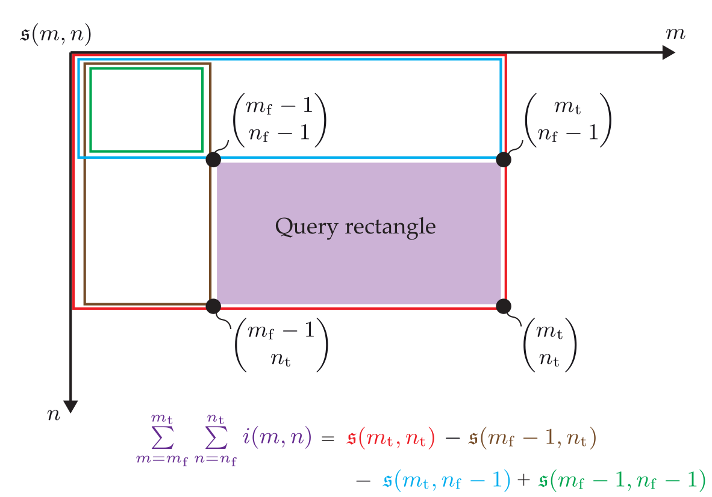
To obtain the sum of the values in the query rectangle, the brown and blue components are subtracted from the red component. The sum of the green region has now been subtracted twice, which is compensated by adding it one time.
Creating the SAT involves seven constant time arithmetic operations and four constant time array accesses for the calculation of each array element of \(i\), that is, a total of \(M\cdot N\) times. Hence, constructing \(\mathfrak{s}\) has a computational complexity of \(\mathcal{O}(M\cdot N)\).
Using \(\mathfrak{s}\) for obtaining the sum of entries of \(i\) in any arbitrary rectangular region has a complexity of \(\mathcal{O}(1)\).
FastCMD#
The main idea of fastCMD lies in accelerating the calculation of the CMD by employing summed area tables for the calculation of the LCDs.
\(\mathbf{Function}\,\, \mathrm{fastCMD}(f(\mathbf{m}), h(\mathbf{m}))\)
\(\quad \mathfrak{f} \leftarrow\) generateSummedAreaTable\(\left(f(\mathbf{m})\right)\)
\(\quad \mathfrak{h} \leftarrow\) generateSummedAreaTable\(\left(h(\mathbf{m})\right)\)
\(\quad \text{CMD}\leftarrow0\)
\(\quad b_\mathrm{max} = \max \lbrace M,N \rbrace\)
\(\quad \mathbf{for}\,m = 1,\ldots,M \,\mathbf{do} \)
\(\quad\quad \mathbf{for}\,n = 1,\ldots,N \,\mathbf{do} \)
\(\quad\quad\quad \mathbf{for}\,b = 0,\ldots,b_\mathrm{max} \,\mathbf{do} \)
\(\quad\quad\quad\quad \text{CMD}\leftarrow \text{CMD} + \big(\mathrm{fastLCD}\left(\mathfrak{f},(m,n)\transp,(b,b)\transp\right)- \)
\(\quad \qquad \qquad \qquad \qquad \quad\ \, \, \ \mathrm{fastLCD}\left(\mathfrak{h},(m,n)\transp,(b,b)\transp\right)\) \(\big)^2\)
\(\quad\quad\quad \mathbf{end\,for}\)
\(\quad\quad \mathbf{end\,for}\)
\(\quad \mathbf{end\,for}\)
\(\quad \mathbf{return}\,\mathrm{CMD}\)
\(\mathbf{Function}\,\, \mathrm{fastLCD}\big(\mathfrak{s}, (m,n)\transp, (b,b)\transp\big)\)
\(\quad m_\mathrm{f} \leftarrow \max\lbrace 0, m - b \rbrace\)
\(\quad m_\mathrm{t} \leftarrow \min\lbrace M, m + b \rbrace\)
\(\quad n_\mathrm{f}\,\, \leftarrow \max\lbrace 0, n - b \rbrace\)
\(\quad n_\mathrm{t}\,\, \leftarrow \min\lbrace N, n + b \rbrace\)
\(\quad \mathbf{return}\,\mathfrak{s}(m_ \mathrm{t}, n_ \mathrm{t}) - \mathfrak{s}(m_ \mathrm{f} - 1, n_ \mathrm{t}) - \mathfrak{s}(m_ \mathrm{t}, n_ \mathrm{f} - 1) + \mathfrak{s}(m_ \mathrm{f}-1, n_ \mathrm{f} - 1)\)
Complexity of the fastCMD-algorithm#
Again,
consider the appliaction of deflection map processing again, i.e., the discrete two-dimensional deflection distributions are assumed as input probability density functions,
with square-shaped angular domains of \(\vert \Omega_\mathrm{a} \vert=n\) and
resulting kernel size \(b_\mathrm{max} = \sqrt{n}\).
Precomputing the SATs has a complexity of \(\mathcal{O}(n)\) because they can be generated by a single sweep over the probability density functions.
The inner loop of the three nested for-loops iteratively updates the calculated CMD by computing the difference between two evaluations of the \(\mathbf{fastLCD}\)-algorithm.
Since one evaluation of \(\mathbf{fastLCD}\) has a constant complexity of \(\mathcal{O}(1)\), the inner loop of \(\mathbf{fastCMD}\) also has a complexity of \(\mathcal{O}(1)\).
Since all three loops run for \(\sqrt{n}\) iterations each, \(\mathbf{fastCMD}\) has a total complexity of \(\mathcal{O}(1\cdot \left(\sqrt{n}\right)^3)=\mathcal{O}(n^{1.5})\).
Discussion of the Generalized Cramér-von Mises Distance#
Sensitivity to strong shifts of peaks Criterion met:
for two deflection distributions with distinct peaks, the two LCDs are only equal to each other for larger kernel sizes, i.e., \(b\)-values. Hence, all smaller kernels will result in non-zero differences between the LCD-evaluations of the two deflection distributions and, consequently, yield a high CMD.
Since the distance between the two peaks determines the kernel size from which the two LCDs will be equal, the CMD is also proportional to the peak distance.
Sensitivity to spreadings of peaks Criterion met:
if a deflection distribution with an intensity peak is adjacent to a deflection distribution with a broad intensity profile, then the resulting CMD will be high.
This happens because the LCDs for the peak-shaped distribution will have a jump discontinuity from low to high as soon as the integration kernel overlaps with the peak and the LCDs of the second deflection distribution will increase gradually for increasing kernel sizes as the intensity is spread over most of the whole angular domain.
Sensitivity to intensity differences Criterion met:
although the CMD has originally been formulated for probability density functions, it does not require its input arguments to be normalized.
Two deflection distributions that are identical except for a scaling factor (i.e., which have different total intensities) will result in different LCD-values for each kernel size and will, therefore, have a non-zero CMD.
Robustness against small variations Criterion met:
for two deflection distributions with close peaks, the LCDs will only have different values for few locations and few kernel sizes and, therefore, the resulting CMD will be low.
Low computational complexity Criterion met:
as shown before, the CMD can be calculated by means of the \(\mathbf{fastCMD}\)-algorithm, which has a complexity of \(\mathcal{O}(n^{1.5})\) for an angular domain of \(\vert \Omega_\mathrm{a} \vert = n\).
Experiments#
In the following experiments, most of the described approaches for capturing deflection maps have been employed to acquire deflection maps of different test objects.
For the acquired deflection maps, gradients have been calculated using the Generalized Cramér-von Mises Distance.
The resulting images show the gradient’s norm \(\Vert \mathrm{grad}_\mathbf{m}\, a(\mathbf{m},\cdot) \Vert\) in pseudo colors.
All experiments include a comparison to a conventional inspection system with a bright field illumination setup.
Peak contrast-to-noise ratio#
To allow a quantitative evaluation, the peak contrast-to-noise ration CNR is determined based on the resulting inspection images.
The CNR is calculated for every considered defect of interest: $\( \mathrm{CNR}=\frac{\vert \tilde{s}-\tilde{\mu}\vert}{\tilde{\sigma}}\,, \)\( with \)\tilde{s}\( denoting the maximum image value of the image region covered by the defect, \)\hat{\mu}\( denoting the mean value and \)\hat{\sigma}$ the standard deviation estimated for a defect-free image region near the defect.
Evtl. Tchebychev inequality?#
Glass gob imaged by schlieren deflectometer#
Gobs are cylindrically shaped preforms made out of glass. They represent important intermediate products in the glass industry and are typically processed to create lenses for glasses or other optical elements.
A prototype of a schlieren deflectometer with a spatial resolution of \(1210 \times 1210\) and an angular resolution of \(9\times 9\) as been used to acquire deflection maps of the test object. The deflection maps have been processed with the CMD.
The resulting inspection images for a conventional bright field setup and for the calculated CMD (in pseudo colors): 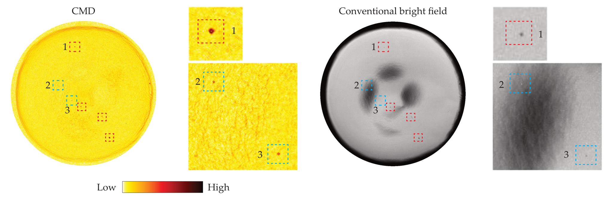
The CNR values resulting for the three numbered regions:
| CNR for region | |||
|---|---|---|---|
| Method | 1 | 2 | 3 |
| Conventional bright field | 1.83 | 1.05 | 0.46 |
| CMD | 23.38 | 15.07 | 14.28 |
-> The light field-based approach in concert with the CMD yields superior results compared to the traditional bright field-based inspection.
Automotive headlamp cover imaged with a laser deflection scanner#
A prototype of a laser deflection scanner has been employed to acquire deflection maps of an automotive headlamp cover made of transparent plastic.
The spatial resolution of the scanner is defined by the length of its scan line of 1397 pixels.
It supports an angular resolution of \(3\times 3\).
Photographs of two examples of plastic headlamp covers; (a) mounted in front of the headlamps of an automobile (highlighted in blue); (b) the test object used in the experiments:
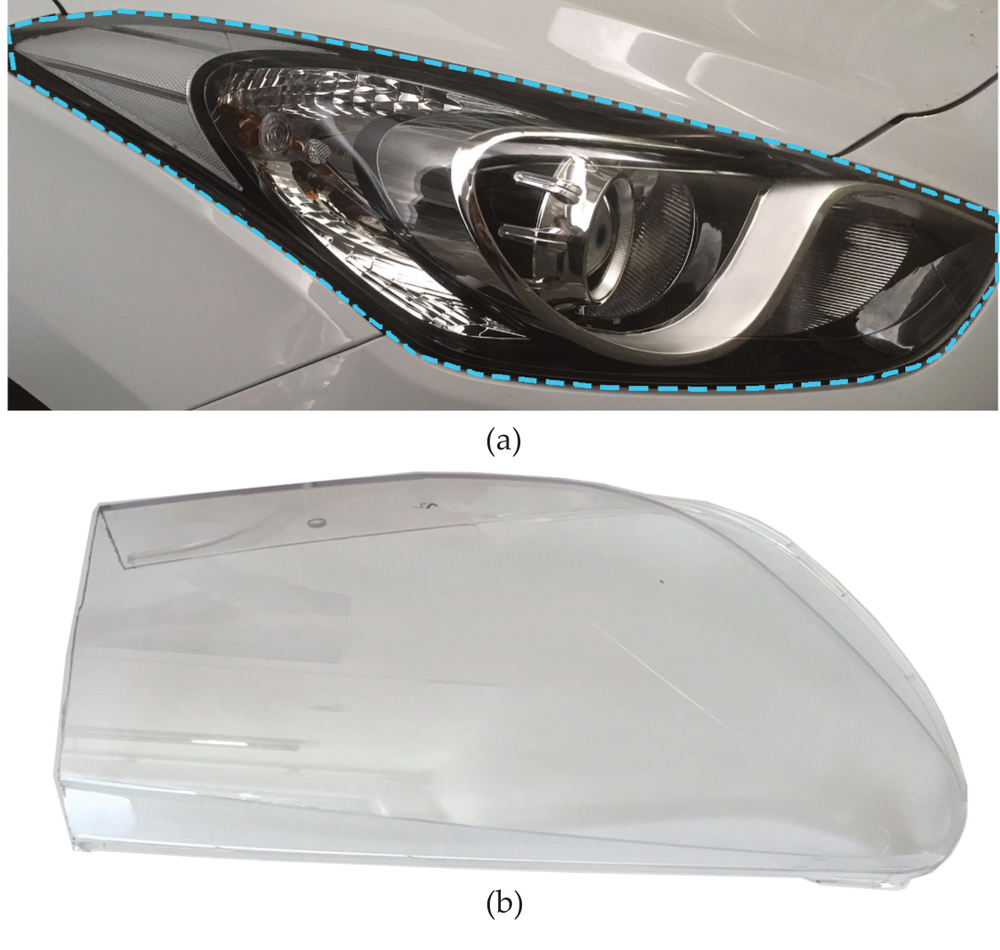
The resulting inspection images for a conventional bright field setup and for the calculated CMD (in pseudo colors): 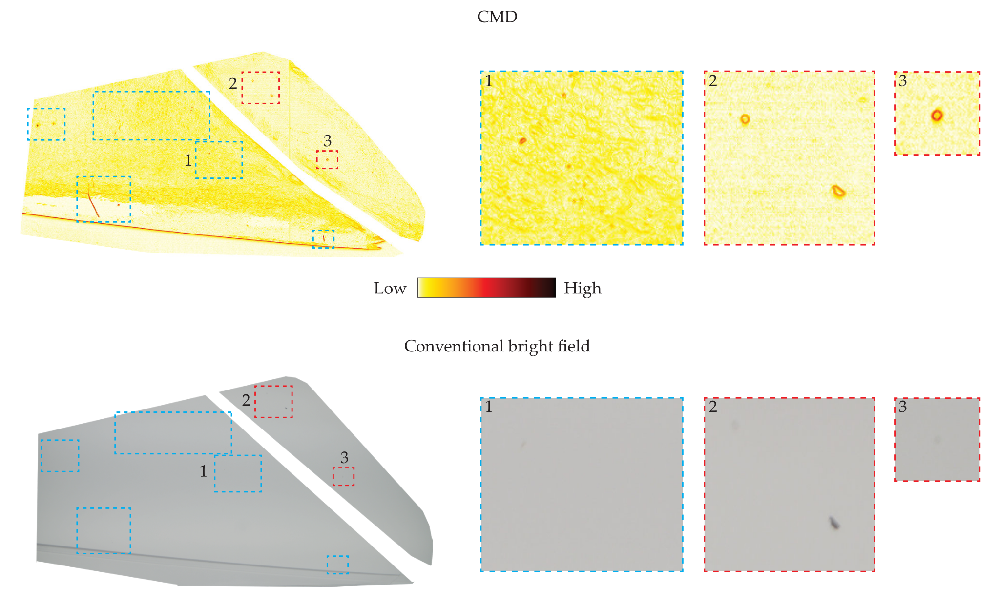
The CNR values resulting for the three numbered regions:
| CNR for region | |||
|---|---|---|---|
| Method | 1 | 2 | 3 |
| Conventional bright field | 4.29 | 22.86 | 4.29 |
| CMD | 23.04 | 31.11 | 40.91 |
Inverse light field illumination for transparent object inspection#
Main physical effect affecting light transport at and inside transparent materials is refraction.
Transitions between materials with different indices of refraction lead to changes of the light’s direction of propagation.
Scattering material defects also affect the light’s direction of propagation.
The effect of refraction can be inverted by emitting a specifically adapted light field, i.e., an inverse light field.
Optical setup for inverse light field illumination#
Two steps:
Offline: Acquisition of a reference light field of a defect-free test object.
During inspection: Illumination of test objects with the inverted reference light field.
Acquisition of the reference light field#
interact(lambda i: showFig('figures/3/invLF_acquisition_',i,'.svg',800,500), i=widgets.IntSlider(min=1,max=2, step=1, value=0))
<function __main__.<lambda>(i)>
A defect-free test object instance that is illuminated by collimated light transforms the incident parallel light beams into a light field \(L'\).
\(L'\) is captured by a light field sensor positioned at a distance \(\Delta\) behind the test object..
Inspection of further objects of the same type#
A light field generator is placed at the original position of the light field sensor at a distance of \(\Delta\) from the test object.
The light field generator emits \(\tilde{L}'\), which is the inverse of \(L'\) in the sense that the directions of propagation of the contained rays have been reversed.
The other side of the object is observed by a telecentric camera system so that only light rays propagating approximately parallel to the optical axis are captured.
interact(lambda i: showFig('figures/3/invLF_emission_',i,'.svg',800,500), i=widgets.IntSlider(min=1,max=4, step=1, value=0))
<function __main__.<lambda>(i)>
Defect-free regions of the test object transform incident light rays into rays propagating parallel to the optical axis. Those rays pass the telecentric stop and yield a high signal level indicating a defect-free region.
Material defects which absorb light or scatter / redirect light will not contribute to the image signal. Scattered or redirected light rays will not propagate parallel to the optical axis and hence get blocked by the telecentric stop.
Inverse light field illumination enables the inspection of transparent objects by acquiring a single image only.
Experiments#
Simulated experiments#
Simulated inspection images of a double-convex lens for a conventional bright field illumination and the inverse light field illumination:
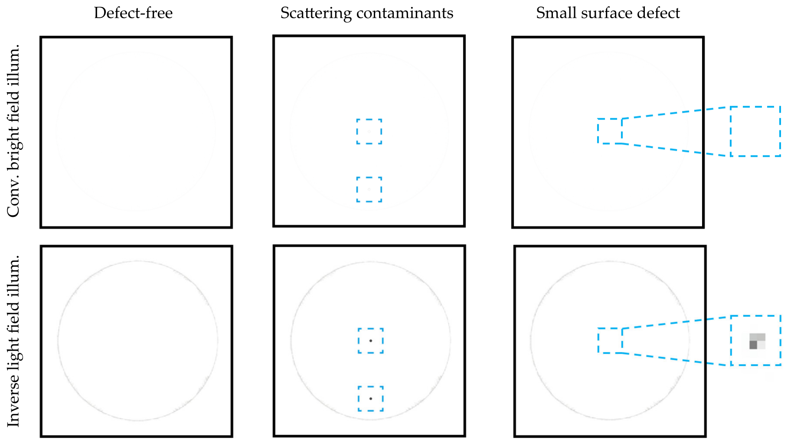
Real experiments#
Test object: double-convex lens.
Test objective: check for correct alignment of the lens.
Light field generator: prototype 1 mentioned previously.
Acquisition of the inverse light field#
Directly use optical setup for the inspection phase for acquiring \(\tilde{L}'\) by means of an illumination series.
After placing a defect-free test object instance in the setup, algorithm \(\mathrm{acquireCentralPixels}\) can be employed to find those pixels of the light field generator, which lead to the emission of collimated light bundles that reach the image sensor. Such light rays have to pass the telecentric stop of the telecentric camera and hence have to propagate parallel to optical axis.
Hence, the pixels determined by \(\mathrm{acquireCentralPixels}\) correspond to the sought inverse light field \(\tilde{L}'\).
Inspection images of a double-convex lens acquired under inverse light field illumination:
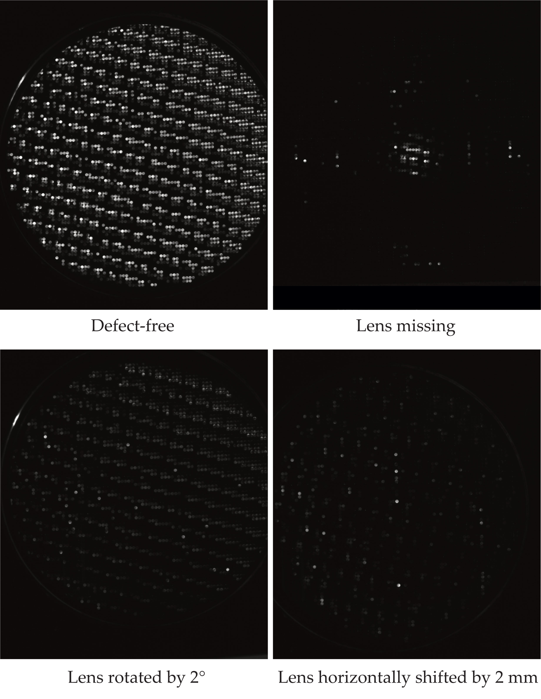
Idee: LF für Sichtprüfung -> auch die Arbeiten vom AIT?